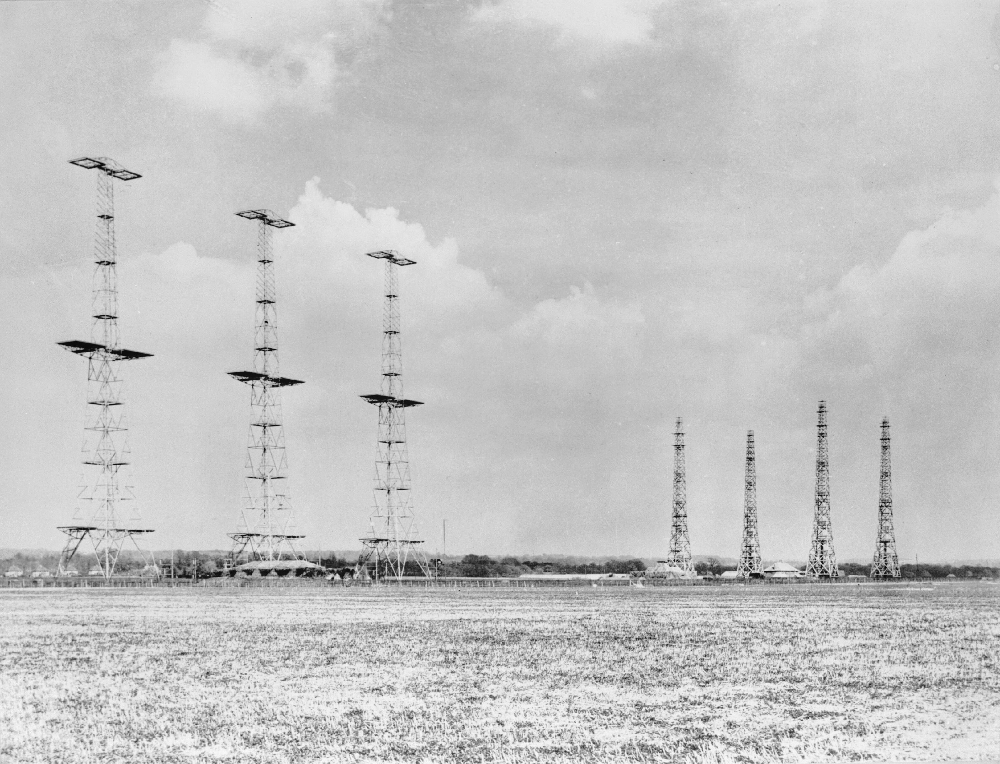
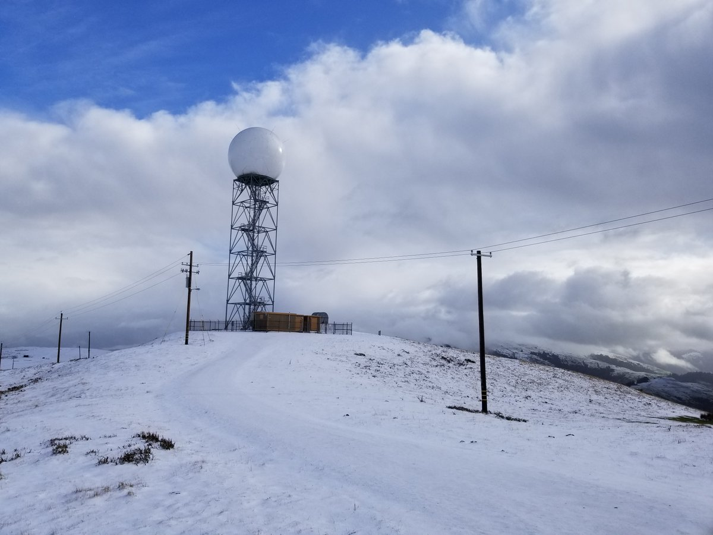

Radar: An Innovation That Changed Defense
Radar changed military defense during World War II by helping people detect enemy planes and ships before they could see them. Its success depended on people sharing information and making decisions. After the war, radar helped improve navigation and weather warnings, giving this wartime innovation a lasting effect on everyday life.



Radar grew from years of experiments with radio waves. During World War II, governments turned those experiments into warning systems. This website explains how radar developed, how people used it during the war, and why its effects continued afterward.



Student words: 1,161